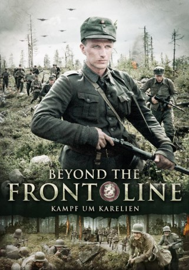

#9064 Beyond the Front Line - Kampf um Karelien
 
 IMDB-Wertung: 6.7 / 10
IMDB-Wertung: 6.7 / 10  Metascore: 0
Metascore: 0 
Finnland 1942. Die finnische Armee setzt alle verfügbaren Kräfte an der Ostfront ein, um die übermächtige Rote Armee aufzuhalten. Leutnant Harry Järv (Tobias Zilliacus) befehligt die Aufklärungs- und Kampftrupps des Infanterie-Regiments IR61. Immer wieder begeben er und seine Männer sich hinter die Frontlinie, um gezielt russische Posten zu überfallen. Sie sind sehr erfolgreich, doch der psychische Druck für Järvs Männer wird immer größer, nicht zuletzt, weil die Russen Scharfschützen gegen sie einsetzen. Im Juni 1944 wird das Regiment in Marsch gesetzt, denn die Russen haben eine Großoffensive in Karelien gestartet. Oberstleutnant Marttinen (Ilkka Heiskanen) bringt die letzten Sturmgeschütze in Stellung und schwört das IR 61 auf ein hartes Gefecht ein. Er will unter allen Umständen die Stadt Tienhaara auf der karelischen Landenge halten, denn Marttinen weiß: Wenn Tienhaara fällt, ist die Straße nach Helsinki frei und Finnland nicht mehr zu halten..
Jahr: 2004
Dauer: 125 Minuten
FSK: 16
Land: Finnland Studio: Pandastorm PicturesTonspuren: DTS - ,
Untertitel:
Auflösung: 1080p (1920x1080) Größe: 13209 MB
Genre: Drama, Krieg, Geschichte
Regisseur: Åke Lindman
Drehbuch: Tomohiko Itô
Soundtrack: Lasse Mårtenson
Darsteller:
- Tobias Zilliacus als Harry Järv
- Christoffer Weiss als Allan Finholm
- Sampo Sarkola als Kaustinen
- Peter Kanerva als Olof Fagerström
- Pelle Heikkilä als
- Christian Sandström als Lt. Lilliandt
- Magnus Roosmann als Wennberg
- Juha Hippi als
- Ilkka Heiskanen als Lt.Col. Alpo Marttinen
- Kim Gustafsson als Björk
- Martin Bahne als Lindblad
- Carl-Gustaf Wentzel als Forss
- Jan-Christian Söderholm als Klas Helèn
- Johan Rönneholm als Händig
- Joachim Thibblin als Bertel Söderman
- Oskar Silén als Lt. Mattas
- Paavo Kerosuo als
- Patrick Henriksen als Rosenlöf
- Jan Korander als Löfman
- Anders Nordlund als Bergroth
- Mattias Asplund als
- Sami Äijänen als
- Tomas Lindh als
- Björn Stenback als
- Frank Furu als
- Joel Salmela als
- Markus Juntunen als
- Harry Järv als Himself
- Barbro Järv als Himself
- Orvar Nilsson als Himself
- Asko Sarkola als Mannerheim
- Hans Henriksson als Hedengren
- Niklas Åkerfelt als Joffs
- Sixten Stjernberg als Military Priest Högström
- Carl-Kristian Rundman als Taxell
- Heikki Törmi als Lagerbohm
- Mika Fagerudd als Major Holmberg
- Benjamin Laustiola als Mangs
- Riko Eklundh als Captain Renvall
- Lars Svedberg als School Master Krook
- Anna Ulrika Ericsson als
- Rachel Mohlin als
- Peter Engman als
- Svante Martin als
- Frank Skog als Stenbäck
- Ivar Hellberg als Kungurtsev
- Jevgeni Haukka als Smirnov
- Polly Kisch als
- Jouni Liukkonen als
- Jarkko Björkbacka als
Datei: X:\2004(A-F)\Beyond the Front Line - Kampf um Karelien (2004, FSK16, 1920x1080).mkv seit 19.07.2018
Festplatte: HD 2003-2004-2005(A-F)
 Es gibt insgesamt 39 Filme in der Gruppe '2004(A-F)'
Es gibt insgesamt 39 Filme in der Gruppe '2004(A-F)'